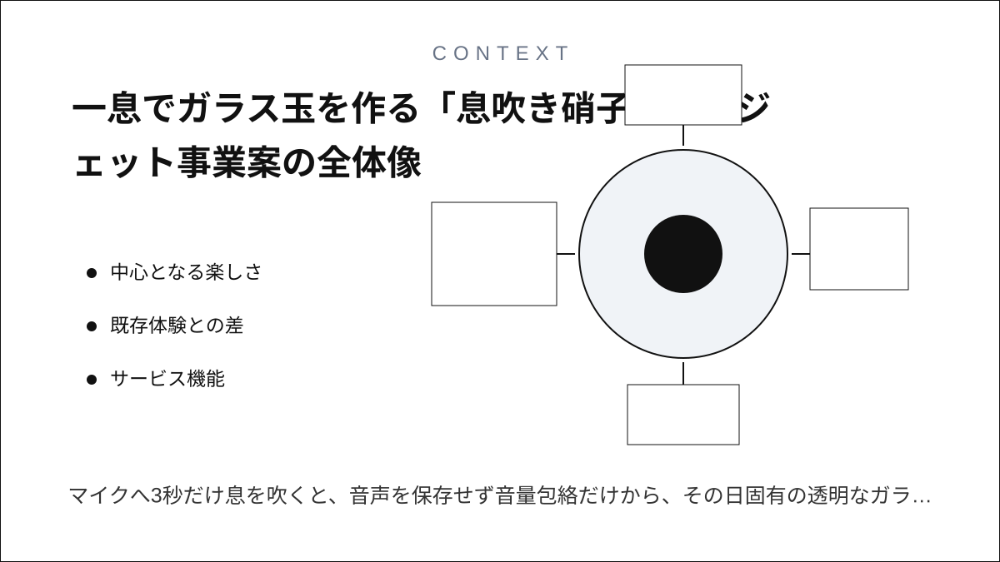
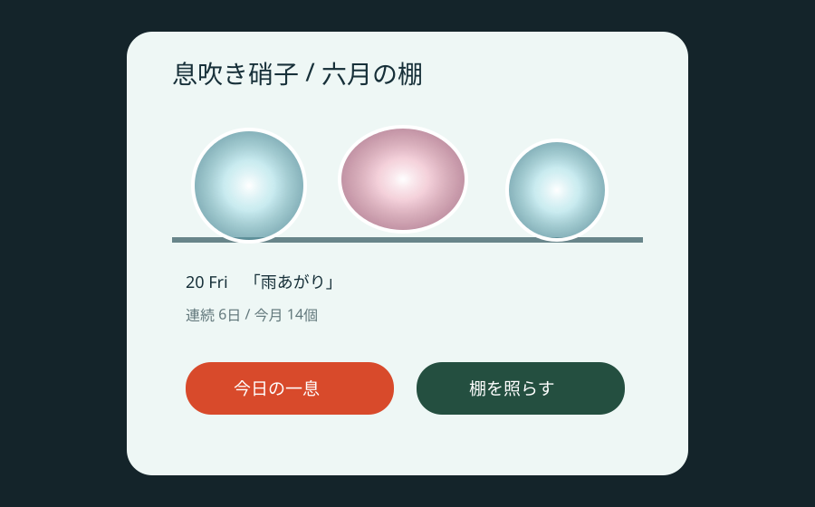
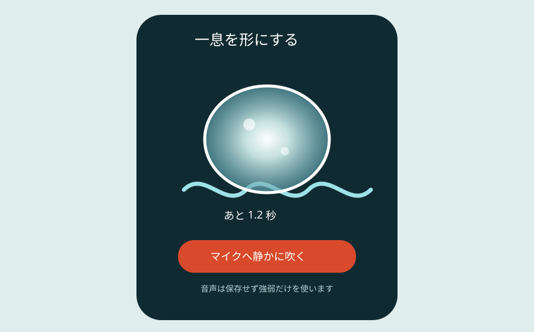
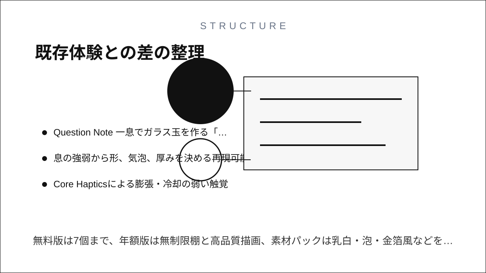
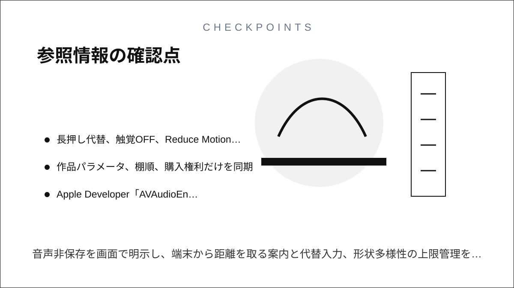

Question Note
一息でガラス玉を作る「息吹き硝子」ウィジェット事業案



中心となる楽しさ
マイクへ3秒だけ息を吹くと、音声を保存せず音量包絡だけから、その日固有の透明なガラス玉が膨らみます。強弱は輪郭、揺れは気泡、指で触れる時間は冷却色へ変わります。健康管理ではなく、身体の一回性が光る小物になる玩具体験です。

利用トリガーは朝の身支度後や就寝前。吹く → 指で冷ます → 名前を一語付ける → ウィジェットの棚で光を見るが中心ループです。iPhoneのマイク・触覚・画面が制作面、WidgetKitが鑑賞面になります。
既存体験との差
| 比較 | 本案の価値 | 継続・支払い理由 |
|---|---|---|
| 呼吸アプリ | 数値や健康目標を持たない | 失敗なく3秒で作品が残る |
| 写真日記 | 撮影対象や文章が不要 | 透明感のある棚が育つ |
| 生成画像 | プロンプトでなく身体入力が形を決める | 素材・棚・光源パックに所有価値がある |
紙・電話・チャット・表計算では息と形の即時対応や触覚を作れません。広告を入れず、録音を保存しない設計、精密な光表現、追加の硝子素材と棚を有料価値にします。
サービス機能
- AVAudioEngineで音量包絡だけを端末内解析し、録音バッファを即時破棄
- 息の強弱から形、気泡、厚みを決める再現可能な生成ルール
- Core Hapticsによる膨張・冷却の弱い触覚
- WidgetKitの棚、月ごとの光景、任意クラウド同期
- マイクを使えない場面向けの長押し代替入力
100万円規模の収益
小さな創作・ウィジェット好きへ、900人 × 年額900円 + 700素材パック × 300円 = 売上1,020,000円。無料版は7個まで、年額版は無制限棚と高品質描画、素材パックは乳白・泡・金箔風などを買い切りにします。
システム要件
- iOS SwiftUI、AVFAudio、Core Haptics、Metalまたは軽量シェーダー、WidgetKit
- マイク権限の目的表示、端末内解析、音声ファイル非保存
- 長押し代替、触覚OFF、Reduce Motion、色だけに依存しない識別
- 作品パラメータ、棚順、購入権利だけを同期
AWSシステム要件と支出
東京リージョン、無料枠・クレジット除外、1 USD = 155円。公開前にAWS Pricing Calculatorで再計算します。
| AWS | 用途 | 想定 | 月額 | 年額 |
|---|---|---|---|---|
| S3 + CloudFront | 素材・サポートWeb配信 | 20GB、月12万配信 | 1,500円 | 18,000円 |
| Cognito | 任意同期アカウント | 1,500 MAU | 1,500円 | 18,000円 |
| API Gateway | 作品パラメータ同期API | 月25万req | 900円 | 10,800円 |
| Lambda | 同期、購入復元、匿名集計 | 月25万実行 | 1,000円 | 12,000円 |
| DynamoDB | 匿名ユーザーID、作品シード、形状・色・気泡パラメータ、作成日、棚順、素材権利、同期版 | 10万件、on-demand | 2,000円 | 24,000円 |
| SES | サポート・購入復元案内 | 月1,000通 | 300円 | 3,600円 |
| CloudWatch | APIエラー・配信監視 | 月3GB | 800円 | 9,600円 |
| AWS Backup | 同期データ保全 | 月15GB | 600円 | 7,200円 |
| AWS Budgets | 予算超過通知 | 2予算 | 200円 | 2,400円 |
| Route 53 | サポートサイトDNS | 1 zone | 100円 | 1,200円 |
| 合計 | AWS利用料 | 8,900円 | 106,800円 | |
開発、人員、利益
AIで音量解析、作品データ構造、同期API、テストの初稿を作り、体験設計2週、試作3週、本実装5週、描画・プライバシー検証3週の13週。1人が企画・実装・運営し、3D/シェーダーデザイン16万円、サウンド・触覚4万円、プライバシー・実機QA12万円を外注します。
支出はAWS 106,800円、Apple Developer Program等2万円、外注320,000円、マーケティング180,000円、予備費80,000円で706,800円。売上 - 支出 = 利益より1,020,000円 - 706,800円 = 313,200円です。
最初の実証とリスク
20人が7日間使い、作成完了率、翌日再訪、マイク拒否率、長押し代替率を測ります。録音への不安、周囲で吹きにくい場面、衛生面の誤解、類似作品の単調化がリスクです。音声非保存を画面で明示し、端末から距離を取る案内と代替入力、形状多様性の上限管理を行います。
参照情報
- Apple Developer「AVAudioEngine inputNode」
- Apple Developer「CHHapticEngine」
- Apple Developer「Creating a widget extension」
- AWS料金
